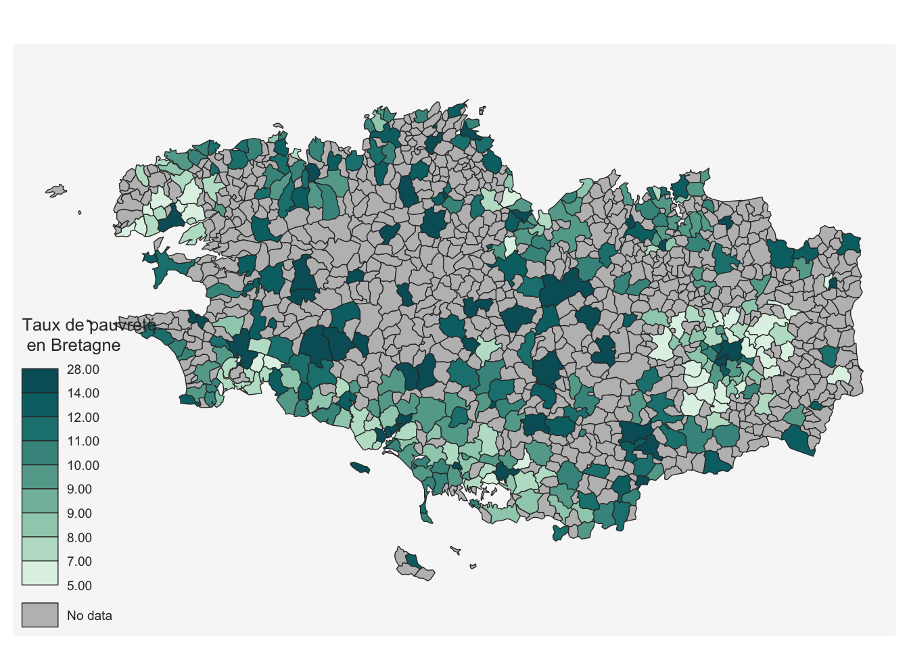
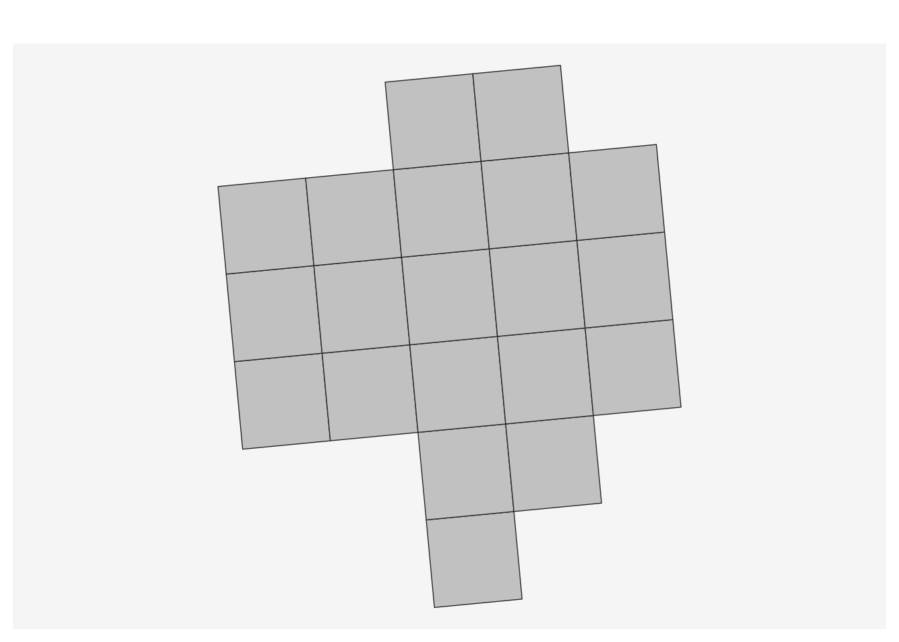
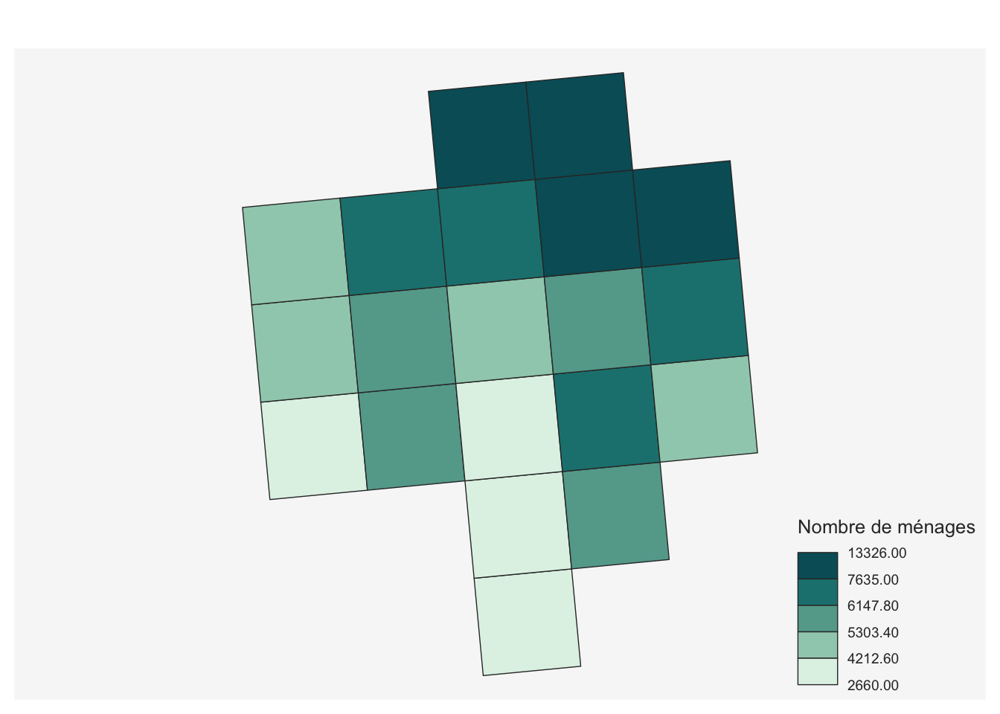

Comment manipuler et faire parler les données spatiales de revenus diffusées par l’Insee ?
Travaux pratiques
Exercice 2 : Carte communale du taux de pauvreté en Bretagne
Nous cherchons ici à réaliser la carte suivante du taux de pauvreté par commune en Bretagne, en mobilisant les données de Filosofi.
Millésimes des données et fonds de carte
Le millésime le plus récent disponible du dispositif Filosofi est
2020.Les données utilisées ici sont en « géographie récente ». Cela signifie que les communes correspondent aux limites en vigueur au 1er janvier de l’année de la sortie des données, à savoir
2023.
Données
Les données nécessaires à la création de cette carte sont les suivantes :
les données de Filosofi des communes, hébergées sur le site de l’Insee, également téléchargeables directement à ce lien :
un fond de carte communal, par exemple la source Admin Express de l’IGN, également téléchargeables directement à ce lien
Chargement des données
La première étape consiste à charger les données.
Chargement du fond de carte
Le fond de carte est au format géographique .gpkg.
On le charge dans R en conservant uniquement le code commune (variable code).
repertoire <- "https://minio.lab.sspcloud.fr/kantunez/diffusion/datajournaliste/"
fond_com <- sf::st_read(dsn = paste0(repertoire, "commune_francemetro_2023.gpkg")) %>%
select(code)On fait un aperçu des premières lignes. Une colonne geometry est renseignée pour chaque ligne. Cela correspond à la “géométrie” de chaque commune : ce qui permet de tracer les contours communaux.
head(fond_com)Simple feature collection with 6 features and 1 field
Geometry type: MULTIPOLYGON
Dimension: XY
Bounding box: xmin: 378764 ymin: 6257683 xmax: 921107 ymax: 7069489
Projected CRS: RGF93 v1 / Lambert-93
code geometry
1 25383 MULTIPOLYGON (((917682 6692...
2 33544 MULTIPOLYGON (((378764 6500...
3 34074 MULTIPOLYGON (((697366 6265...
4 37002 MULTIPOLYGON (((503920 6706...
5 59415 MULTIPOLYGON (((730611 7013...
6 59416 MULTIPOLYGON (((662028 7066...Chargement des données de pauvreté par commune
Les données communales sont au format .csv.
On les charge dans R.
data_com <- read.csv(file = paste0(repertoire, "cc_filosofi_2020_COM.csv"), sep = ";")On peut regarder à quoi la table ressemble grâce à l’instruction head(data_com)
CODGEO NBMENFISC20 NBPERSMENFISC20 MED20 PIMP20 TP6020 TP60AGE120 TP60AGE220 TP60AGE320 TP60AGE420
1 01001 331 842 24820 s s s s s s
2 01002 116 264 23220 s s s s s s
3 01004 6882 15358 21070 48,0 17,0 24,0 22,0 18,0 16,0
4 01005 767 1939 24380 s s s s s s
5 01006 s s s s s s s s s
6 01007 1192 2888 24330 57,0 7,0 s s s s
TP60AGE520 TP60AGE620 TP60TOL120 TP60TOL220 PACT20 PTSA20 PCHO20 PBEN20 PPEN20 PPAT20 PPSOC20 PPFAM20
1 s s s s s s s s s s s s
2 s s s s s s s s s s s s
3 11,0 s 5,0 27,0 72,2 65,4 3,5 3,3 26,1 8,0 8,2 2,9
4 s s s s s s s s s s s s
5 s s s s s s s s s s s s
6 s s s s 76,1 70,8 2,6 2,7 26,3 7,2 4,8 2,3
PPMINI20 PPLOGT20 PIMPOT20 D120 D920 RD20
1 s s s s s s
2 s s s s s s
3 3,6 1,7 -14,5 11490 35550 3,1
4 s s s s s s
5 s s s s s s
6 1,7 0,8 -14,4 14430 37340 2,6Traitement des données
Nettoyage des données et fusion des tables
On fait les traitements supplémentaires suivants :
- On va sélectionner uniquement les variables d’intérêt à savoir :
- le code de la commune
CODGEO; - le taux de pauvreté à 60 % pour l’année 2020 appelé
TP6020.
data_tx_pauv <- data_com %>%
select(code = CODGEO, TP6020)- Pour certaines communes, le taux de pauvreté prend les valeurs
s(secret statistique)nd(non défini, pour les communes de très petites tailles)
On remplace ces valeurs par la valeur NA de R qui correspond aux valeurs manquantes.
data_tx_pauv <- data_tx_pauv %>%
mutate(TP6020 = ifelse(TP6020 %in% c("s", "nd"), NA, TP6020))- On remplace les virgules par des points (le logiciel R interprète le point comme séparateur décimal)
data_tx_pauv <- data_tx_pauv %>%
mutate(TP6020 = str_replace(TP6020, pattern = "\\,", replacement = "\\."))- Une fois les virgules remplacées, on convertit la variable transformée au format numérique
data_tx_pauv <- data_tx_pauv %>%
mutate(TP6020 = as.numeric(TP6020))- On fusionne la table Filosofi avec le fond de carte.
carte_tx_pauv <- fond_com %>%
inner_join(data_tx_pauv)- On se focalise par exemple sur la Bretagne (on sélectionne les 4 départements de la région)
carte_tx_pauv <- carte_tx_pauv %>%
filter(str_sub(code, 1, 2) %in% c("22", "29", "35", "56"))Carte
Voici comment tracer la carte :
mf_choro(carte_tx_pauv, var = "TP6020", col_na = "grey",
leg_title = "Taux de pauvreté\n en Bretagne")On précise :
- la variable à cartographier (
var = "TP6020") - le fait que les valeurs
NAseront affichées en gris (col_na = "grey") - le titre de la légende
leg_title = "Taux de pauvreté\n en Bretagne"
Indice 1
Utilisez la variable MED20.
Indice 2
Pensez à bien corriger la variable pour la transformer en variable numérique
Indice 3
Les codes des départements Normands sont les suivants : 14, 27, 50, 61, 76.
Solution
data_niv_vie <- data_com %>%
select(code = CODGEO, MED20) %>%
mutate(MED20 = ifelse(MED20 %in% c("s", "nd"), NA, MED20),
MED20 = as.numeric(MED20))
carte_niv_vie <- fond_com %>%
inner_join(data_niv_vie) %>%
filter(str_sub(code, 1, 2) %in% c("14", "27", "50", "61", "76"))
mf_choro(carte_niv_vie, var = "MED20", col_na = "grey",
leg_title = "Niveau de vie\n en Normandie")Exercice 3 : Manipuler les données carroyées de Filosofi
Pour la seconde application, on s’intéresse aux données carroyées Filosofi.
Ces données sont disponibles sur des carreaux de 200 mètres et d’1 kilomètre.
Pour simplifier le chargement, on utilise ici les carreaux de 1 km.
Plusieurs variables sont calculées sur ces carreaux, les données et la liste de variables sont disponibles sur le site de l’Insee.
- On charge les données par carreau.
carreaux <- sf::st_read(dsn = paste0(repertoire, "carreaux_1km_met.gpkg"))Reading layer `carreaux_1km_met' from data source
`https://minio.lab.sspcloud.fr/kantunez/diffusion/datajournaliste/carreaux_1km_met.gpkg'
using driver `GPKG'
Simple feature collection with 374027 features and 31 fields
Geometry type: POLYGON
Dimension: XY
Bounding box: xmin: 99435.76 ymin: 6048791 xmax: 1242694 ymax: 7110351
Projected CRS: RGF93 v1 / Lambert-93- On sélectionne quelques variables d’intérêt
colnames(carreaux) [1] "idcar_1km" "i_est_1km" "lcog_geo" "ind" "men" "men_pauv"
[7] "men_1ind" "men_5ind" "men_prop" "men_fmp" "ind_snv" "men_surf"
[13] "men_coll" "men_mais" "log_av45" "log_45_70" "log_70_90" "log_ap90"
[19] "log_inc" "log_soc" "ind_0_3" "ind_4_5" "ind_6_10" "ind_11_17"
[25] "ind_18_24" "ind_25_39" "ind_40_54" "ind_55_64" "ind_65_79" "ind_80p"
[31] "ind_inc" "geom" listeIndic <- c("idcar_1km", #identifiant du carreau de 1km
"lcog_geo", #liste des communes qui l'intersectent
"ind", # Nombre d'individus du carreau
"men", #Nombre de ménages du carreau
"ind_snv" #Somme des niveaux de vie winsorisés des individus
)
carreaux <- carreaux %>%
select(all_of(listeIndic))- On regarde les premières lignes.
head(carreaux)Simple feature collection with 6 features and 5 fields
Geometry type: POLYGON
Dimension: XY
Bounding box: xmin: 1217861 ymin: 6048791 xmax: 1221929 ymax: 6051153
Projected CRS: RGF93 v1 / Lambert-93
idcar_1km lcog_geo ind men ind_snv
1 CRS3035RES1000mN2029000E4252000 2A041 3.0 1.4 84270.6
2 CRS3035RES1000mN2029000E4254000 2A041 2.0 0.9 56180.4
3 CRS3035RES1000mN2030000E4252000 2A041 6.0 2.5 144146.0
4 CRS3035RES1000mN2030000E4253000 2A041 16.5 6.9 396401.6
5 CRS3035RES1000mN2030000E4254000 2A041 5.0 2.4 140451.0
6 CRS3035RES1000mN2030000E4255000 2A041 9.0 4.1 252811.8
geom
1 POLYGON ((1218038 6048791, ...
2 POLYGON ((1220028 6048969, ...
3 POLYGON ((1217950 6049794, ...
4 POLYGON ((1218944 6049883, ...
5 POLYGON ((1219939 6049972, ...
6 POLYGON ((1220934 6050061, ...On retrouve bien nos différentes variables, ainsi que la colonne de géométrie. On a ainsi, dans un seul fichier, à la fois des informations (valeurs de certains indicateurs pour chaque carreaux) mais aussi de quoi tracer ces carreaux.
- Pour créer une carte sur le territoire qui nous intéresse, on peut ne conserver qu’une liste de communes grâce à la variable
lcog_geo. Par exemple, on ne conserve ici que les carreaux qui intersectent l’une des 4 communes des Hauts-de-Seine suivantes : Montrouge (code géographique 92049), Malakoff (92046), Châtillon (92020) et Bagneux (92007) :
liste_depcom <- c("92049", "92046", "92020", "92007")
# écrire le code géographique de la commune, et pas son code postal
position <- strsplit(carreaux$lcog_geo,'(?<=.{5})', perl=TRUE) %>%
lapply(function(x) any(x%in% liste_depcom)) %>%
unlist()
carreaux_select <- carreaux[position,]- On affiche les carreaux concernés
mf_base(carreaux_select)
- On cartographie le nombre de ménages par carreau :
mf_choro(carreaux_select, var = "men", col_na = "grey",
leg_title = "Nombre de ménages")
- On agrège les données sur la zone définie (l’ensemble des carreaux qui intersectent les communes indiquées).
agregats <- carreaux_select %>%
st_set_geometry(NULL) %>% # Suppression de la colonne géométrie devenue inutile
select(-idcar_1km, -lcog_geo) %>% # Suppression des colonnes qui ne sont pas à sommer
summarise_all(sum) # Somme de tous les indicateurs
print(agregats) ind men ind_snv
1 268572 122229 7781599957
Privilégier les sources et mailles géographiques adaptées à votre besoin
Si vous vous intéressez simplement à compter les ménages ou les individus à des niveaux supracommunaux, utilisez directement les données communales du recensement de la population, elles sont faite pour cela !
Les données carroyées de Filosofi peuvent vous servir dans le cas où vous vous intéressez à des territoires infracommunaux ou à des petites communes dont les indicateurs ont été blanchis afin de respecter le secret statistique.
Indice
Vous pouvez extraire les 2 premiers caractères des codes communes pour identifier celles concernées par un département.
C’est possible par exemple grâce à la création de l’objet “position”, dans la fonction lapply : lapply(function(x) any(str_sub(x, 1, 2) == "93"))
Solution
# identification des carreaux qui intersectent une commune de la Seine-Saint-Denis (département 93)
position <- strsplit(carreaux$lcog_geo,'(?<=.{5})', perl=TRUE) %>%
lapply(function(x) any(str_sub(x, 1, 2) == "93")) %>%
unlist()
# extraction de ces carreaux
carreaux_select_dep <- carreaux[position,] %>%
mutate(rev_moy = ind_snv/ind)
# tracé de la carte
mf_choro(carreaux_select_dep, var = "rev_moy", col_na = "grey", border=NA,
leg_title = "Revenu moyen\n par carreau", leg_val_rnd = -2)
mf_map(fond_com %>% filter(substr(code,1,2)=="93"), col=NA, add=TRUE, lwd=2)
Solution
agregats_dep <- carreaux_select_dep %>%
st_set_geometry(NULL) %>% # Suppression de la colonne géométrie devenue inutile
select(-idcar_1km, -lcog_geo) %>% # Suppression des colonnes qui ne sont pas à sommer
summarise_all(sum) %>% # Somme de tous les indicateurs
mutate(rev_moy = ind_snv / ind) %>%
pull(rev_moy)
print(paste0(round(agregats_dep), " euros"))[1] "20469 euros"